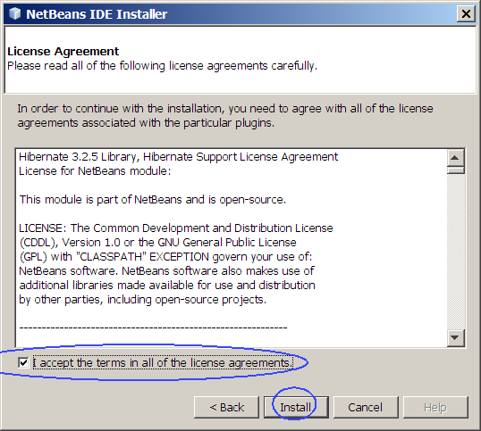
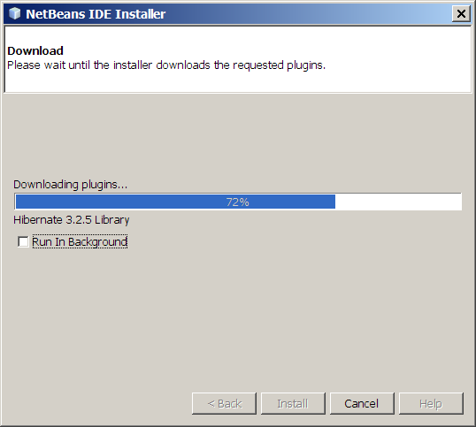
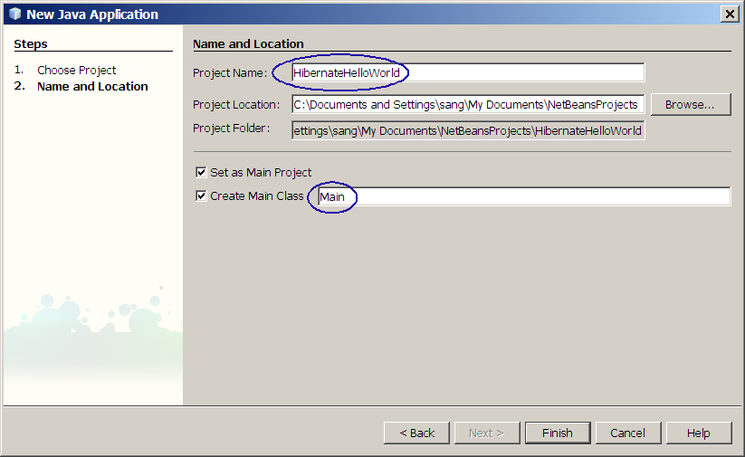
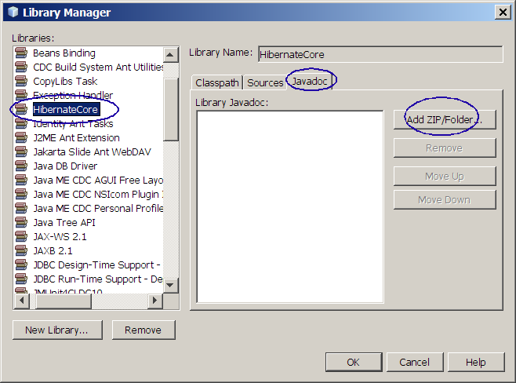

Building Hibernate Application Step By
Step
This lab takes you through the basics of building a simple
HelloWorld Hibernate application. Even though you are building
the simplest
possible Hibernate application, you will get an exposure to the
relatively complete concept
of Hibernate. You will also learn how to
display context sensitive Java document on Hibernate classes.
This lab is one of the several Hibernate related hands-on labs.
Expected duration: 60 minutes
Software Needed
Before you begin, you need to install the following software on your
computer. The Hibernate library files are provided as part of the
hands-on lab zip file so you don't have
to download Hibernate yourself.
- Java Standard Development Kit (JDK™) version
6.0 (download)
- If you already have installed JDK 5.0 or JDK 6.0, you
can skip this.
- NetBeans IDE 6.1 (download)
- Download either "Web &
Java EE" or "All"
bundles.
- When you install NetBeans IDE, it will ask you which JDK
you want to use.
- 3513_hibernatestepbystep.zip (download)
- Download it and unzip it in a directory of your choice.
We will call the directory as <LAB_UNZIPPED_DIRECTORY> in this
document.
- Once unzipped, it will create hibernatestepbystep
directory
under <LAB_UNZIPPED_DIRECTORY>. Read
<LAB_UNZIPPED_DIRECTORY>/hibernatestepbystep/index.html document
(this document) to proceed.
- It contains Hibernate 3.2 library files, Hibernate Javadoc, and
Derby client driver so you don't need to download them yourself.
Change Log
- March 28th, 2007: Created
- April 23rd, 2007: More pictures are added
- May 5th, 2007: Added a step of adding log4j.properties file to
the project
- March 15th, 2008: NetBeans 6.0.1 is used
- Arpil 3rd, 2008: Hibernate jar files are created into Hibernate
library, the sample projects use Hiberate library.
- June 10th, 2008: NetBeans 6.1 is used
Things to be done (by Sang Shin)
Lab Exercises
Exercise 0: Start Derby Database server
and Create "mydatabase" database
(0.1)
Start Java DB (code-named as Derby) database server (if it has not been
started already)
1. Select
Java DB Server.
(Figure-0.10 below)
- Select Services tab.
- Expand Databases.
- Right click Java DB and
select Start Server. If
it has been already started, it should be grayed out.
Figure-0.10: Start the Derby database server
return to top of the
exercise
(0.2)
Create a database of your own called "mydatabase" (if it has not been
created already)
1. Create database
- Right click Java DB and
select Create Database. (Figure-0.20 below)
Figure-0.20: Create mydatabase database
2. Fill up the fields of the
Create
Java DB Database dialog box.
- For the Database Name
field, type in "mydatabase".
- For Password field, type
in "app". (Figure-0.21 below)
- Click OK.
Figure-0.21: Create Java DB Database
3. Make a connection to the
mydatabase
database. Note that you have not created any tables yet
under
this database. This is an optional step.
- Expand Drivers.
- Right click Java DB (Network)
and select Connect Using...
- Observe that the New Database
Connection dialog box appears.
- For the Database URL field, type in jdbc:derby://localhost:1527/mydatabase.
- For the User Name and Password firled, type in app.
- Click OK.
- Observe that there is now jdbc:derby://localhost:1527/mydatabase
[app on APP] under Databases.
(Figure-0.22 below)

Figure-0.22: Observe that mydatabase database is created
- Click Projects tab
window to go back to display the project view of the project
(0.3)
Install Hibernate NetBeans Plug-in
The Hibernate plug-in is available only for NetBeans 6.1.


Exercise 1: Build "HelloWorld"
Hibernate application
(1.1)
Write POJO classes
In this simple application, there is only one POJO class to
write. The name of the POJO class is
Person.java.
1. Create a new NetBeans project
- Select File->New Project (Ctrl+Shift+N).
(Figure-1.11 below)
Figure-1.11: Create a new project
- Observe that the New Project
dialog box appears.
- Under Choose Project
pane,
select Java under Categories and Java Application under Projects. (Figure-1.12 below)
- Click Next.
Figure-1.12: Create Java Application project
- Under Name and Location
pane, for the Project Name
field, type in HibernateHelloWorld.
- For Create Main Class
field, type in Main.
(Figure-1.13 below)
- Click Finish.

Figure-1.13: Give a project name
- Observe that HibernateHelloWorld
project appears and IDE generated Main.java
is displayed in the source editor window of NetBeans IDE. You are
going to modify the Main.java
later on.
2. Write
Person.java as shown
in Code-1.14 below. Note that this is a POJO class.
- Right click HibernateHelloWorld
project node and select
New->Java Class.
- Observe the New Java Class
dialog box appears.
- For the Class Name
field, enter Person.
- For Package field,
leave it as a blank field. You are going to use default package
by leaving it a blank field. (Using a package is usually a better
practice but in this exercise, we are using the default package
for the sake of simplicity of the exercise.)
- Click Finish.
(Figure-1.14 below)
Figure-1.14: Name and Location pane
- Modify the IDE generated Person.java
with the code of Code-1.15
below. You can copy and paste the code.
import java.io.Serializable;
public class Person implements Serializable {
private int id;
private String name;
protected Person() {
}
public Person(int id, String name) {
this.id = id;
this.name = name;
}
public int getId() {
return id;
}
public void setId(int id) {
this.id = id;
}
public String getName() {
return name;
}
public void setName(String name) {
this.name = name;
}
}
|
Code-1.15: Person.java
(1.2)
Write Hibernate mapping files for the POJO classes.
Since there is only one POJO class,
Person
class, in this application,
you are going to write a single
mapping file. (Actually, a single mapping file can contain
mapping
information of multiple POJO classes but it is a good practice to have
a separate mapping file for each POJO class.)
1. Write
Person.hbm.xml.
In this mapping file, you will specify that
Person
class is mapped to a database table
called
person. The
id field of the
Person class will be used as a
primary key field in the person database table. The
name field will have a
corresponding column called
cname.
- Right click HibernateHelloWorld
project node and select New->Other.
(Figure-1.21 below)
Figure-1.21: Create XML file
- Observe that Choose File Type pane appears.
- Choose XML under Categories section on the left and XML Document under File Types on the right.
(Figure-1.22 below)
- Click Next.
Figure-1.22: Create XML Document
- Observe that Name and Location
pane appears.
- For File Name field,
enter Person.hbm.
(Figure-1.23 below)
- Click Browse for Folder.

Figure-1.23: Specify the folder in which the file gets created
- Observe that the Browse Folders dialog box appears.
- Select src node.
- Click Select Folder.
(Figure-1.24 below)
Figure-1.24: Select src
- Click Next. (Figure-1.25 below)
Figure-1.25: Click Next.
- Observe that the Select
Document Type pane appears.
- Click Finish. (Figure-1.26 below)
Figure-1.26: Finish creation of XML document
- Observe IDE generated XML file is displayed in the editor window.
- Replace the template XML file with the contents of the Code-1.27
below.
- Study the code by paying
special attention to the bold fonted parts.
<?xml version='1.0'
encoding='utf-8'?>
<!DOCTYPE hibernate-mapping
PUBLIC "-//Hibernate/Hibernate Mapping DTD//EN"
"http://hibernate.sourceforge.net/hibernate-mapping-3.0.dtd">
<hibernate-mapping>
<class name="Person"
table="person">
<id name="id" type="int">
<generator class="increment"/>
</id>
<property name="name" column="cname" type="string"/>
</class>
</hibernate-mapping>
|
Code-1.27: Person.hbm.xml
return to top of the
exercise
(1.3)
Write a Hibernate configuration file
The Hibernate configuration file is
for each application. You specify database connection setting
information
along
with names of the mapping files in this file. Except the names of
the mapping files, most Hibernate applications will share the same
Hibernate configuration file.
1. Write
hibernate.cfg.xml.
- Right click HibernateHelloWorld
project node and select New->XML
Document.
- Observe that Name and Location
pane appears.
- For File Name field,
enter hibernate.cfg.
- Click Browse for Folder.
- Observe that the Browse Folders dialog box appears.
- Select src node.
- Click Select Folder.
- Click Next (of the Name and Location pane).
- Observe that the Select
Document Type pane appears.
- Click Finish.
- Observe IDE generated XML file is displayed in the editor window.
- Replace the template XML file with the contents of the Code-1.31
below.
<?xml version='1.0'
encoding='utf-8'?>
<!DOCTYPE hibernate-configuration PUBLIC
"-//Hibernate/Hibernate Configuration DTD//EN"
"http://hibernate.sourceforge.net/hibernate-configuration-3.0.dtd">
<hibernate-configuration>
<session-factory>
<!-- Database connection settings -->
<property
name="connection.driver_class">org.apache.derby.jdbc.ClientDriver</property>
<property
name="connection.url">jdbc:derby://localhost:1527/mydatabase</property>
<property name="connection.username">app</property>
<property name="connection.password">app</property>
<!-- JDBC connection pool
(use the built-in) -->
<property
name="connection.pool_size">1</property>
<!-- SQL dialect -->
<property
name="dialect">org.hibernate.dialect.DerbyDialect</property>
<!-- Echo all executed
SQL to stdout -->
<property
name="show_sql">false</property>
<!-- Mapping files -->
<mapping resource="Person.hbm.xml"/>
</session-factory>
</hibernate-configuration>
|
Code-1.31: hibernate.cfg.xml
return to top of the
exercise
(1.4)
Write Main.java and HibernateUtil.java
1. Modify IDE generated
Main.java
as shown in Code-1.21 below. Study the code by paying
special attention to the bold fonted parts.
Since you have not added Hibernate library files to the classpath, you
will see bunch of compile errors (red boxes) detected by the IDE.
Don't worry about these compile
errors for now. We will add the Hibernate library files during
the subsequent step.
In the
main() method of the
Main class, object instance is
created and persisted through
Session
object of the Hibernate.
import org.hibernate.*;
import org.hibernate.cfg.Configuration;
public class Main {
public static void main(String[] args) {
// Set up database tables
HibernateUtil.droptable("drop table person");
HibernateUtil.setup("create
table person ( id int, cname VARCHAR(20))");
// Create SessionFactory and Session object
SessionFactory sessions = new
Configuration().configure().buildSessionFactory();
Session session = sessions.openSession();
// Perform life-cycle
operations under a transaction
Transaction tx = null;
try {
tx =
session.beginTransaction();
// Create a Person object and save it
Person p1 = new Person();
p1.setName("Sang Shin");
session.save(p1);
// Create another Person object and save it.
Person p2 = new Person();
p2.setName("Young Shin");
session.save(p2);
//
Retrieve the person objects
Person person = (Person)session. get(Person.class, p1.getId());
System.out.println("First person retrieved = " + person.getName());
person = (Person)session.get(Person.class, p2.getId());
System.out.println("Second person retrieved = " + person.getName());
tx.commit();
tx =
null;
} catch ( HibernateException
e ) {
if (
tx != null ) tx.rollback();
e.printStackTrace();
} finally {
session.close();
}
// Display tables
HibernateUtil.checkData("select * from person");
}
}
|
Code-1.41: Person.hbm.xml
2. Write
HibernateUtil.java as
shown in Code-1.42 below.
This is a utility class you will use
for testing and debugging purpose. In this lab, you are going to use
this utility class for creating and displaying database tables.
Use this utility class in other Hibernate projects at your
convenience.
It is not really important for you to read this code.
- Right click HibernateHelloWorld
project node and select New->Java
Class.
- Observe that the Name and
Location pane appears.
- For the Class Name
field, enter HibernateUtil.
(Figure-1.42 below)
- Click Finish.
Figure-1.42: Create HibernateUtil.java
- Replace the IDE generated HibernateUtil.java with the one in
Code-1.43 below.
import java.sql.Connection;
import java.sql.DriverManager;
import java.sql.Statement;
import java.sql.ResultSet;
import java.sql.ResultSetMetaData;
import org.hibernate.HibernateException;
import org.hibernate.Session;
import org.hibernate.SessionFactory;
import org.hibernate.cfg.Configuration;
public class HibernateUtil {
// Database configuration
public static String url =
"jdbc:derby://localhost:1527/mydatabase";
public static String dbdriver =
"org.apache.derby.jdbc.ClientDriver";
public static String username = "app";
public static String password = "app";
public static final SessionFactory sessionFactory;
static {
try {
//
Create the SessionFactory from hibernate.cfg.xml
sessionFactory = new Configuration().configure().buildSessionFactory();
} catch (Throwable ex) {
//
Make sure you log the exception, as it might be swallowed
System.err.println("Initial SessionFactory creation failed." + ex);
throw new ExceptionInInitializerError(ex);
}
}
public static final ThreadLocal session = new
ThreadLocal();
public static Session currentSession() throws
HibernateException {
Session s = (Session)
session.get();
// Open a new Session, if
this thread has none yet
if (s == null) {
s =
sessionFactory.openSession();
//
Store it in the ThreadLocal variable
session.set(s);
}
return s;
}
public static void closeSession() throws
HibernateException {
Session s = (Session)
session.get();
if (s != null)
s.close();
session.set(null);
}
static Connection conn;
static Statement st;
public static void setup(String sql) {
try {
createStatement();
st.executeUpdate(sql);
} catch (Exception e) {
System.err.println("Got an exception! ");
e.printStackTrace();
System.exit(0);
}
}
public static void createStatement() {
try {
Class.forName(dbdriver);
conn
= DriverManager.getConnection(url, username, password);
st =
conn.createStatement();
} catch (Exception e) {
System.err.println("Got an exception! ");
e.printStackTrace();
System.exit(0);
}
}
// Drop table if exists
public static void droptable(String sql) {
try {
createStatement();
st.executeUpdate(sql);
} catch (Exception e) {
}
}
public static void checkData(String sql) {
String[] starray =
sql.split(" ");
System.out.println("\n******** Table: " +
starray[starray.length-1] + " *******");
try {
createStatement();
ResultSet r = st.executeQuery(sql);
HibernateUtil.outputResultSet(r);
// conn.close();
} catch (Exception e) {
e.printStackTrace();
}
}
public static void outputResultSet(ResultSet rs)
throws Exception{
ResultSetMetaData metadata =
rs.getMetaData();
int numcols =
metadata.getColumnCount();
String[] labels = new
String[numcols];
int[] colwidths = new
int[numcols];
int[] colpos = new
int[numcols];
int linewidth;
linewidth = 1;
for (int i = 0; i <
numcols; i++) {
colpos[i] = linewidth;
labels[i] = metadata.getColumnLabel(i + 1); // get its label
int
size = metadata.getColumnDisplaySize(i + 1);
if
(size > 30 || size == -1)
size = 30;
int
labelsize = labels[i].length();
if
(labelsize > size)
size = labelsize;
colwidths[i] = size + 1; // save the column the size
linewidth += colwidths[i] + 2; // increment total size
}
StringBuffer divider = new
StringBuffer(linewidth);
StringBuffer blankline = new
StringBuffer(linewidth);
for (int i = 0; i <
linewidth; i++) {
divider.insert(i, '-');
blankline.insert(i, " ");
}
// Put special marks in the
divider line at the column positions
for (int i = 0; i <
numcols; i++)
divider.setCharAt(colpos[i] - 1, '+');
divider.setCharAt(linewidth
- 1, '+');
// Begin the table output
with a divider line
System.out.println(divider);
// The next line of the
table contains the column labels.
// Begin with a blank line,
and put the column names and column
// divider characters "|"
into it. overwrite() is defined below.
StringBuffer line = new
StringBuffer(blankline.toString());
line.setCharAt(0, '|');
for (int i = 0; i <
numcols; i++) {
int
pos = colpos[i] + 1 + (colwidths[i] - labels[i].length()) / 2;
overwrite(line, pos, labels[i]);
overwrite(line, colpos[i] + colwidths[i], " |");
}
System.out.println(line);
System.out.println(divider);
while (rs.next()) {
line
= new StringBuffer(blankline.toString());
line.setCharAt(0, '|');
for
(int i = 0; i < numcols; i++) {
Object value = rs.getObject(i + 1);
if (value != null){
overwrite(line, colpos[i] + 1, value.toString().trim());
overwrite(line, colpos[i] + colwidths[i], " |");
}
}
System.out.println(line);
}
System.out.println(divider);
}
static void overwrite(StringBuffer b, int pos,
String s) {
int len = s.length();
for (int i = 0; i < len;
i++)
b.setCharAt(pos + i, s.charAt(i));
}
}
|
Code-1.43: HibernateUtil.java
return to top of the
exercise
(1.5)
Add Hibernate library and Java DB driver
1. Right click HibernateHelloWorld project
and select Properties.
(Figure-1.61 below)
Figure-1.61: Select Properties of the project
2. Add Hibernate library
- Select Libraries under Categories section on the left and
select Add Library button
on the right. (Figure-1.62 below)
Figure-1.62: Select Add Library
- Select Hibernate library.
- Click Add Library
button. (Figure-1.63 below)
Figure-1.63: Add HibernateCore library
3. Add Java DB library.
- Click Add Library
button.
- Select Java DB Driver.
- Click Add Library.
Figure-1.64: Close the Project Properties
return to top of the
exercise
(1.6)
Add log4j.properties file
This is optional step. If you don't have
log4j.properties file in the
class path of your project, you will get some warning messages, which
you can ignore for now.
1. Add
log4j.properties file.
- Right click HibernateHelloWorld
project node and select New->Other.
- Choose Other under Categories section on the left and Empty File under File Types on the right.
- Click Next.
- Observe that Name and Location
pane appears.
- For File Name field,
enter log4j.properties.
- Click Browse on the
Folder.
- Observe that the Browse Folders dialog box appears.
- Select src.
- Click Select Folder.
- Observe empty file is displayed in the editor window.
- Copy the contents of the Code-1.71 below and paste it to the
empty file.
#
# Log4J Settings for log4j 1.2.x (via jakarta-commons-logging)
#
# The five logging levels used by Log are (in order):
#
# 1. DEBUG (the least serious)
# 2. INFO
# 3. WARN
# 4. ERROR
# 5. FATAL (the most serious)
# Set root logger level to WARN and append to stdout
log4j.rootLogger=WARN, stdout
log4j.appender.stdout=org.apache.log4j.ConsoleAppender
log4j.appender.stdout.layout=org.apache.log4j.PatternLayout
# Pattern to output the caller's file name and line number.
log4j.appender.stdout.layout.ConversionPattern=%d %5p (%c:%L) - %m%n
# Print only messages of level ERROR or above in the package noModule.
log4j.logger.noModule=FATAL
# OpenSymphony Stuff
log4j.logger.com.opensymphony=INFO
log4j.logger.com.opensymphony.webwork=DEBUG
# Spring Stuff
log4j.logger.org.springframework=INFO
|
Code-1.71: log4j.properties file
(1.7)
Build and run the application
Now you are ready to build and run the application.
1. Right click
HibernateHelloWorld project
and select
Run.
(Figure-1.81 below)
Figure-1.81: Run Project
2. Observe the result in the
Output window
of the IDE. (Figure-1.82 below) The first part of the result is the
output from the persistence operation through Hinernate and the second
part is the display of the rows of the
person
table.
Figure-1.82: Result of performing database operation through Hibernate
Trouble-shooting: If you
see the following error condition in the Output window, it is highly
likely due to the fact the database server is not running.
15 [main] WARN
org.hibernate.cfg.SettingsFactory - Could not obtain connection
metadata
org.apache.derby.client.am.DisconnectException:
java.security.PrivilegedActionException : Error opening socket to
server localhost on port 1527 with message : null
at
org.apache.derby.client.net.NetAgent.<init>(Unknown Source)
at
org.apache.derby.client.net.NetConnection.newAgent_(Unknown Source)
at
org.apache.derby.client.am.Connection.<init>(Unknown Source)
at
org.apache.derby.client.net.NetConnection.<init>(Unknown Source)
at
org.apache.derby.jdbc.ClientDriver.connect(Unknown Source)
at
java.sql.DriverManager.getConnection(DriverManager.java:582)
at
java.sql.DriverManager.getConnection(DriverManager.java:154)
at
org.hibernate.connection.DriverManagerConnectionProvider.getConnection(DriverManagerConnectionProvider.java:110)
at
org.hibernate.cfg.SettingsFactory.buildSettings(SettingsFactory.java:76)
at
org.hibernate.cfg.Configuration.buildSettings(Configuration.java:1933)
at
org.hibernate.cfg.Configuration.buildSessionFactory(Configuration.java:1216)
at
HibernateUtil.<clinit>(HibernateUtil.java:26)
at Main.main(Main.java:9)
Got an exception!
|
Solution: Start the
database server as described in
Exercise 0 above.
Trouble-shooting: If you
see the following error condition in the Output window, it is highly
likely due to the fact the client driver,
derbyclient.jar for the Derby
database, is not added to the classpath.
Initial SessionFactory creation
failed.org.hibernate.HibernateException: JDBC Driver class not found:
org.apache.derby.jdbc.ClientDriver
Exception in thread "main" java.lang.ExceptionInInitializerError
at
HibernateUtil.<clinit>(HibernateUtil.java:30)
at Main.main(Main.java:9)
Caused by: org.hibernate.HibernateException: JDBC Driver class not
found: org.apache.derby.jdbc.ClientDriver
at
org.hibernate.connection.DriverManagerConnectionProvider.configure(DriverManagerConnectionProvider.java:66)
at
org.hibernate.connection.ConnectionProviderFactory.newConnectionProvider(ConnectionProviderFactory.java:124)
at
org.hibernate.connection.ConnectionProviderFactory.newConnectionProvider(ConnectionProviderFactory.java:56)
at
org.hibernate.cfg.SettingsFactory.createConnectionProvider(SettingsFactory.java:397)
at
org.hibernate.cfg.SettingsFactory.buildSettings(SettingsFactory.java:62)
at
org.hibernate.cfg.Configuration.buildSettings(Configuration.java:1933)
at
org.hibernate.cfg.Configuration.buildSessionFactory(Configuration.java:1216)
at
HibernateUtil.<clinit>(HibernateUtil.java:26)
... 1 more
|
Solution: Add the client
driver,
derbyclient.jar, to
the classpath as described in
step 1.5 above.
return to top of the
exercise
(1.8)
Verify the database
In this step, you are going to see if the person table is in fact
populated with two rows that have been added in the Main class.
1. Select Services tab
window.
2. Expand Databases.
3. Right click jdbc:derby://localhost:1527/mydatabase
[app on APP] and select Connect.
(Figure-1.91 below)
Figure-1.91: Connect to the database
4. Expand Tables.
5. Right click PERSON table
and select View Data.
(Figure-1.92 below)
Figure-1.92: View Data of the PERSON table
6. Observe that the two rows are present in the PERSON database table. (Figure-1.93
below)
Figure-1.93: Verify the contents of the database table.
Solution:
This exercise up to this point is provided as a ready-to-open-and-run
NetBeans project as part of hands-on lab zip file. You can find it as
<LAB_UNZIPPED_DIRECTORY>/hibernatestepbystep/samples/HibernateHelloWorld.
You will have to add Hibernate library files and client driver
once you opened the project as described in this exercise above.
return to top of the
exercise
Summary
In this exercise, you have learned how to build a simple HelloWorld
Hibernate application from scratch. You learned Hibernate
application typically has domain classes, corresponding mapping files
for those domain classes, and Hibernate configuration file.
Exercise 2: Build "HibernateHelloWorld2"
application
In this exercise, you are going to create
a new project called HibernateHelloWorld2
by copying HibernateHelloWorld
project you built in Exercise 1 above. By copying the
project, all the Hibernate library files are automatically copied into
the new project. You are also going add
another POJO class and its mapping
file to the new project.
- Create "HibernateHelloWorld2" project by copying
the "HibernateHelloWorld" project
- Add a new POJO class, Student.java
- Write a mapping file, Student.hbm.xml
- Modify hibernate.cfg.xml
- Modify Main.java
- Build and run the project
- Observe SQL commands sent by the Hibernate
(2.1)
Create "HibernateHelloWorld2" project by copying the
"HibernateHelloWorld" project
1. Right-click
HibernateHelloWorld project
and select
Copy Project.
(Figure-2.10 below)
Figure-2.10: Copy Project
2. Give a project name to the new project.
- Observe that the Copy Project
dialog box appears.
- For the Project Name:
field, type in HibernateHelloWorld2.
- Click Copy. (Figure-2.11
below)
Figure-2.11: Copy Project
- Observe that HibernateHelloWorld2
project node appears.
return to top of the
exercise
(2.2)
Add a new POJO class
In this step, you are going to add a new POJO domain class called
Student.
1. Write
Student.java.
import java.io.Serializable;
public class Student implements Serializable {
private int id;
private String school;
private String grade;
protected Student() {
}
public Student(int id, String school) {
this.id = id;
this.school = school;
}
public int getId() {
return id;
}
public void setId(int id) {
this.id = id;
}
public String getSchool() {
return school;
}
public void setSchool(String name) {
this.school = name;
}
public String getGrade() {
return grade;
}
public void setGrade(String grade) {
this.grade = grade;
}
}
|
Code-2.21: Student.java
return to top of the
exercise
(2.3)
Write new mapping file, Student.hbm.xml, for the Student class
1. Write
Student.hbm.xml as
shown in Code-2.31 below.
<?xml version='1.0'
encoding='utf-8'?>
<!DOCTYPE hibernate-mapping
PUBLIC "-//Hibernate/Hibernate Mapping DTD//EN"
"http://hibernate.sourceforge.net/hibernate-mapping-3.0.dtd">
<hibernate-mapping>
<class name="Student"
table="student">
<id name="id" type="int">
<generator class="increment"/>
</id>
<property name="school" column="schoolname"
type="string"/>
<property name="grade" column="grade" type="string"/>
</class>
</hibernate-mapping>
|
Code-2.31: Student.hbm.xml
return to top of the
exercise
(2.4)
Modify Main.java
1. Modify the
Main.java of the
HibernateHelloWorld2 project
as shown in Code-2.41 below. The
code fragments that need to be changed are high-lighted in bold and
blue-colored font. Please make sure you are modifying the
Main.java of the
HibernateHelloWorld2 project not
HibernateHelloWorld
project. (It is very easy to make this mistake.)
import org.hibernate.*;
import org.hibernate.cfg.Configuration;
public class Main {
public static void main(String[] args) {
// Set up database tables
HibernateUtil.droptable("drop table Person");
HibernateUtil.droptable("drop
table Student");
HibernateUtil.setup("create
table Person ( id int, cname VARCHAR(20))");
HibernateUtil.setup("create
table Student ( id int, schoolname VARCHAR(30), grade VARCHAR(5))");
// Create SessionFactory and
Session object
SessionFactory sessions =
new Configuration().configure().buildSessionFactory();
Session session =
sessions.openSession();
// Perform life-cycle
operations under a transaction
Transaction tx = null;
try {
tx =
session.beginTransaction();
//
Create a Person object and save it
Person p1 = new Person();
p1.setName("Sang Shin");
session.save(p1);
//
Create another Person object and save it.
Person p2 = new Person();
p2.setName("Young Shin");
session.save(p2);
//
Retrieve the person objects
Person person = (Person)session. get(Person.class, p1.getId());
System.out.println("First person retrieved = " + person.getName());
person = (Person)session.get(Person.class, p2.getId());
System.out.println("Second person retrieved = " + person.getName());
// Create a Student object and save it
Student s1 = new Student();
s1.setSchool("Lexington High School");
s1.setGrade("A");
session.save(s1);
// Retrieve the Student objects
Student student = (Student)session. get(Student.class, s1.getId());
System.out.println("First student retrieved = " + student.getId() + ",
" +
"School attending = " + student.getSchool() + ", " +
"Grade = " + student.getGrade());
tx.commit();
tx =
null;
} catch ( HibernateException
e ) {
if (
tx != null ) tx.rollback();
e.printStackTrace();
} finally {
session.close();
}
// Display tables
HibernateUtil.checkData("select * from Person");
HibernateUtil.checkData("select * from Student");
}
}
|
Code-2.41: Main.java
return to top of the
exercise
(2.5)
Modify hibernate.cfg.xml file
1. Modify
hibernate.cfg.xml file
as shown in Code-2.52 below. The code fragment that needs to be
added is highlighted in blue-colored and bold font.
<?xml version='1.0'
encoding='utf-8'?>
<!DOCTYPE hibernate-configuration PUBLIC
"-//Hibernate/Hibernate Configuration DTD//EN"
"http://hibernate.sourceforge.net/hibernate-configuration-3.0.dtd">
<hibernate-configuration>
<session-factory>
<!-- Database connection
settings -->
<property
name="connection.driver_class">org.apache.derby.jdbc.ClientDriver</property>
<property
name="connection.url">jdbc:derby://localhost:1527/mydatabase</property>
<property
name="connection.username">app</property>
<property
name="connection.password">app</property>
<!-- JDBC connection pool
(use the built-in) -->
<property
name="connection.pool_size">1</property>
<!-- SQL dialect -->
<property
name="dialect">org.hibernate.dialect.DerbyDialect</property>
<!-- Echo all executed
SQL to stdout -->
<property
name="show_sql">true</property>
<!-- Mapping files -->
<mapping
resource="Person.hbm.xml"/>
<mapping
resource="Student.hbm.xml"/>
</session-factory>
</hibernate-configuration>
|
Code-2.52: Modified hibernate.cfg.xml file
return to top of the
exercise
(2.6)
Build and run the application
1. Right click
HibernateHelloWorld2 project
and select
Run Project.
2. Observe the result in the Output window of the IDE. (Figure-2.61
below)
Figure-2.61: Result
return to top of the
exercise
(2.7)
Observe the SQL commands
In this step, you are going to set the flag in the hibernate.cfg.xml
file to display the SQL commands that are being sent by the Hibernate
framework. This is a useful debugging feature.
1. Change the "show_sql"
property of the <session-factory>
element
of the hibernate.cfg.xml file
to true (from false) as shown in Figure-2.71 below.
Figure-2.71: Set "show_sql" property to true
2. Right-click HibernateHelloWorld2 project
and select Run Project.
3. Observe the SQL commands that are being sent by the Hibernate.
(Figure-2.72 below)
Figure-2.72: SQL commands
Solution:
This exercise up to this point is provided as a ready-to-open-and-run
NetBeans project as part of hands-on lab zip file. You can find it as
<LAB_UNZIPPED_DIRECTORY>/hibernatestepbystep/samples/HibernateHelloWorld2. You will have to add Hibernate
library files and client driver once you opened the project as
described in Exercise 1.
return to top of the
exercise
Summary
In this exercise, you have learned
how to create a new Hibernate project by copying an existing Hibernate
project. You also learned how to add another POJO class and its
corresponding Hibernate map file to the project. Finally you
learned how to display the SQL commands that are sent by the Hibernate
to the database.
return to
the top
Exercise 3: Configuring Hibernate JavaDoc
In this exercise, you are going to
configure Javadoc of the Hibernate so that you can display context
sensitive Java documentation on Hibernate classes. You do this
just once meaning once it is configured, Javadoc of Hibernate classes
can be displayed for all the other and future Hibernate projects.
(3.1)
Configure Hibernate Javadoc directory to the NetBeans IDE
1. Select
Tools from the top-level menu and
select Libraries.
(Figure-3.10 below)
Figure-3.10: Select Java Platform Manager
2. Configure Javadoc for the HibernateCore library.
- Select Hibernate
under Libraries on the left.
- Select Javadoc tab
window.
- Click Add ZIP/Folder
button. (Figure-3.11 below)

Figure-3.11: Add ZIP/Folder of the Hibernate Javadoc
- Browse down to <LAB_UNZIPPED_DIRECTORY>/hibernatestepbystep/hibernatedoc
directory
- Select api and click Add ZIP/Folder button. (Figure-3.12
below)
Figure-3.12: Add api directory
- Click OK to close the Library Manager dialog box.
(Figure-3.13 below)
Figure-3.13: Close Java Platform Manager
(3.2)
Display Javadoc of the Session Hibernate interface in a
context-sensitive manner
1. Double-click
Main.java to
open it in the editor window.
2. Move the cursor on the
Session and
right click on it.
3. Select
Show Javadoc.
(Figure-3.21 below)
Figure-3.21: Select Show Javadoc on Session
4. Observe the Javadoc of the
Session
interface gets displayed in the browser. (Figure-3.22 below)
5. Please spend some time browsing various methods supported by
Session interface.
Figure-3.22: Javadoc of Session interface
return to top of the
exercise
Summary
In this exercise, you have learned how to display Javadoc of Hibernate
classes in a context-sensitive manner.
return
to the top
Homework
exercise (for people who
are taking Sang Shin's "Java EE Programming online course")
1. The homework is to create your own
Hibernate project called
HibernateMyHobby.
You are welcome to create a new project from scratch as you've done in
Exercise 1 or you can copy
HibernateHelloWorld
or
HibernateHelloWorld2 project
as you've done in Exercise 2 above.
- The Hibernate project has the following POJO class.
- Hobby class with the following fields
- int myHobbyId
- String hobby
- int yearIstartedThisHobby
- Create a database table called, hobbytable
either manually or programmatically using HibernateUtil.setup()
utility method as is done in the HibernateHelloWorld
project.
- In the Main.java, create
a few instances of Hobby objects instances and save
them to the database tables.
2. This is an optional exercise.
Rebuild the project by using MySQL or HSQL. You can create a new
project called
HibernateMyHobbyMySQL or
HibernateMyHobbyHSQL
by copying
HibernateMyHobby project.
You can download MySQL and HSQL from the following sites.
3
. Send the following files to
j2eehomeworks@sun.com
with Subject
as J2EEHomework-hibernatestepbystep.
- Zip file of the the
HibernateMyHobby
NetBeans project. (Someone else
should be able to open and run it as a NetBeans project.) You can
use your favorite zip utility or you can use "jar" utility that comes
with JDK as following.
- cd <parent directory that contains HibernateMyHobby directory>
(assuming you named your project as HibernateMyHobby)
- jar cvf HibernateMyHobby.zip HibernateMyHobby (HibernateMyHobby should contain nbproject directory)
- Captured output screen -
name it as J2EEHomework-hibernatestepbystep.gif
orJ2EEHomework-hibernatestepbystep.jpg (or J2EEHomework-hibernatestepbystep.<whatver
graphics format>)
- Any screen capture that shows that your program is working is
good enough.
- If you decide to use
different IDE other than NetBeans, the zip
file should contain all the files that are needed for rebuilding the
project - war file with necessary source files is OK.